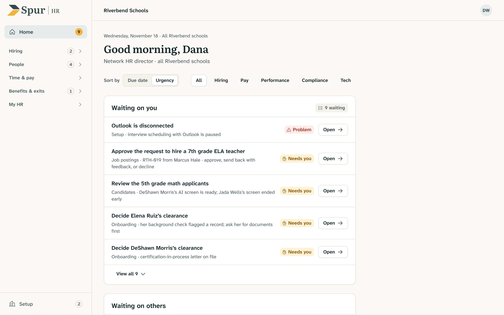
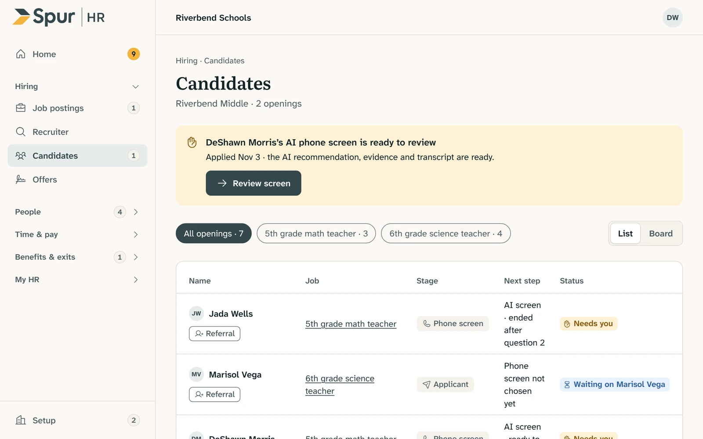
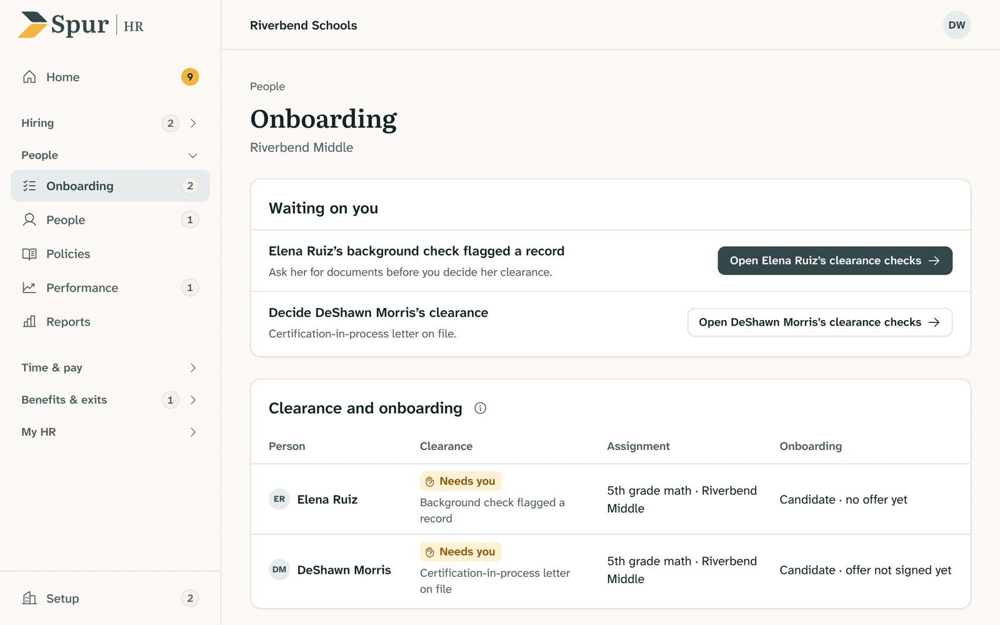
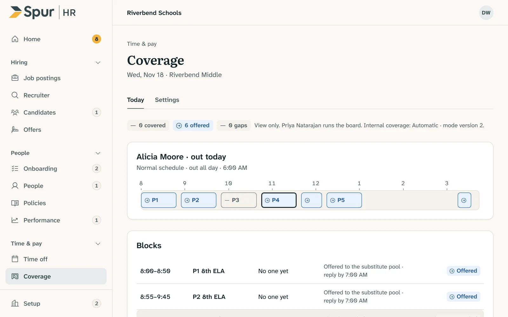

Schools buy HR software. Then hire people to run it.
Spur HR is the HR system that does the work. It handles recruiting, HR records, payroll and performance management like a capable member of your team. Your people make the call.
First release January 2027 More in April 2027

The software was never the hard part.
A school buys four systems. Then someone on staff spends their week moving information among them and chasing people for the rest.
What schools buy
Applicant trackingHR recordsPayrollPerformance managementWhat it still takes
Retype the new hireChase signaturesCheck licensesFix timesheetsRe-enter it in payrollAnswer the same question againStaff time to run it allSpur HR does that work. You make the call.
It works like a recruiter and an HR generalist on your team.
Spur HR drafts, screens, schedules and follows up. The work arrives finished and ready for your review, the way it would from a strong hire.
- Writes the job posting from your notes and your template
- Screens every application against your criteria and shows its reasons
- Runs an optional phone screen and hands you the summary and transcript
January 2027

It runs itself. You supervise and approve.
Spur HR never approves, rejects, publishes or pays. It brings each decision to the right person with what they need to make it. Managing it feels like managing a great HR hire.
- One list of what is waiting on you, across every school
- Every decision carries the name of the person who made it
- Every step also works by hand
Let the computers do the clerical work, so you can do the thinking work.
January 2027

Built for how schools run.
Generic HR platforms are built for offices. Schools run on campuses, credentials, school-year calendars and bell schedules. In Spur HR those are part of the design.
- Networks with several campuses and legal employers
- Licenses, endorsements, clearances and their expiry dates
- Absences, substitutes and coverage, period by period
April 2027

You decide what AI handles. Function by function.
Turn AI on or off for each kind of work. Have it write job descriptions but leave interviews to your team. Turn all of it on, and HR runs itself under your supervision.
- Write job descriptionsOn
- Screen applicationsOn
- Conduct first-round interviewsOff
- Run onboarding paperworkOn
- Answer staff HR questionsOn
- 01One system instead of many.
- 02Built for how schools run.
- 03AI assists. People decide.
Watch it do the work.
See how Spur HR can prepare the work so you can make the real decisions.
Silent video. Illustrative prototype, not a live customer system. Recruiting and HR records: January 2027. Payroll, time and performance management: April 2027.
What is included, and when.
One record for each person, from first application to last paycheck. Nothing is typed twice. Every function has its release date.
January 2027 First releaseApril 2027 Second release
Recruiting
| Function | Release |
|---|---|
| Job postings | January 2027 |
| Spur HR recruiter: sourcing and outreach | January 2027 |
| Candidate screening | January 2027 |
| Candidate interviews | January 2027 |
| Candidate offers | January 2027 |
HR records and onboarding
| Function | Release |
|---|---|
| Onboarding for your organization | January 2027 |
| Tax forms and compliance | January 2027 |
| Staff handbook and policies: current-year policies for new hires | January 2027 |
| Full staff handbook and policy management | April 2027 |
| Onboarding for compensation | April 2027 |
Payroll, time and leave
| Function | Release |
|---|---|
| Payroll | April 2027 |
| Time and attendance | April 2027 |
| Time off | April 2027 |
| Substitutes and coverage | April 2027 |
| Family and medical leave | April 2027 |
| Benefits enrollment | April 2027 |
| Employee exits | April 2027 |
Performance management
| Function | Release |
|---|---|
| 1:1 check-ins | April 2027 |
| Staff satisfaction and engagement surveys | April 2027 |
| Goal tracking | April 2027 |
| Formal reviews | April 2027 |
| Informal and formal observations | April 2027 |
| Formal warnings | April 2027 |
| Performance improvement plans | April 2027 |
| Promotion decisions | April 2027 |
Hiring a 5th grade math teacher, start to finish.
Seven steps. Spur HR prepares four of them. A person decides the other three.
Spur HR prepares You decide
- Spur HR preparesThe Spur HR recruiter finds math teachers who fit the role and invites them to apply.
- Spur HR preparesA job description, written from the facts you give and your school’s template.
- You decideYou edit and approve it. The posting goes to your school’s job page.
- Spur HR preparesEach application is screened against your criteria, with the reasons shown.
- You decideYou choose who to interview. A person can always take the phone screen.
- Spur HR preparesThe offer letter and signature packet are prepared.
- You decideYou approve the offer. Onboarding starts when it is signed.
See the whole school, and every person in it.
Reports come from the records your team already keeps. Nothing to export, and nothing to add up by hand.
A dashboard for each school
Totals for one campus or the whole network.
Recruiting pipeline
January 2027Open roles this hiring season.
Time to fill
January 202732 daysMedian, posting approved to offer signed
Headcount
April 2027148Staff on payroll today
Time off
April 2027214 daysTaken this school year
Staff survey
April 202781%Responded to the fall survey
A page for each staff member
Credentials, goals, check-ins, reviews and time off, in one record.
Credentials and clearances
January 2027- Teaching license, math 4–8
- Valid to June 2029
- Background check
- Cleared
- Fingerprints
- Cleared
- First aid and CPR
- Renew by March 2027
Goals
April 2027- Lead 5th grade math planning
- In progress
- Finish new curriculum training
- Done
Check-ins and reviews
April 2027- 1:1 check-in, Nov 17
- Notes shared
- 1:1 check-in, Oct 20
- Notes shared
- Annual review, 2026–27
- Due in May
Time off
April 2027- Sick days
- 2 used, 8 left
- Personal days
- 1 used, 2 left
- Next
- Dec 19, approved
Spend less on the back office. Invest more in the classroom.
Most HR vendors keep their prices private, which makes them hard to compare. Spur HR has one price for the whole product, and it is on this page.
$35per employee, per month
- On a one-year agreement
- One price for the whole product
- No modules sold separately
New charter school, or fewer than 30 staff? Talk to us about pricing →
Questions schools ask first.
Spur HR is in development. These are the protections it is being built with. We will publish our security documentation before the first school goes live.
Each school or network is kept separate from every other customer. Inside your account, access follows fixed roles and is limited by school, by legal employer and by sensitive field. A principal sees their own school. Medical and leave documents are open only to the specialists who need them. Spur support staff have no standing access to your records. Support access is requested for a named task, approved by your school, time-limited and logged.
No. AI drafts, summarizes and flags. It cannot approve or reject a candidate, publish a posting, change access or release payroll. Those actions belong to a named person, and the record shows who took them. You can turn AI off for any kind of work and do that work by hand.
Data is encrypted in transit and at rest. Social Security numbers and bank details are collected by the payroll provider, so Spur HR does not hold raw copies. Privileged accounts require multi-factor authentication. Sensitive reads, downloads and access changes are written to an audit log that cannot be edited.
No. Recruiting and onboarding in the January 2027 release work without payroll. Payroll arrives in April 2027, and you choose whether to adopt it.
HIPAA’s Privacy Rule generally excludes records a school holds in its role as an employer. Health-plan records have different protections. For April 2027, we plan for employees to choose their benefits through their provider or carrier. Spur HR would track the plan name, coverage tier, deduction amount and enrollment status for the school’s payroll and HR work.
From the company schools already trust with staffing.
Spur has recruited, screened, onboarded, scheduled and paid school staff for years. Spur HR is built on what that work taught us about how schools run.
We have done this work by hand
Recruiting, credentialing, onboarding, scheduling and payroll for school staff.
We built our own software to do it
Spur’s staffing teams run on tools we built and maintain ourselves.
Now schools can use it directly
Spur HR brings that experience to your own staff and your own HR office.
See it for yourself.
Tour a working prototype with sample data, on your own time. Or ask us to walk you through it.